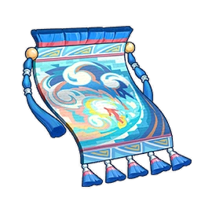

Natlan · Books & Literature
Rangi Nui's End
This single-volume People of the Springs folk song follows a descendant’s imagined journey through ancestral lands to the legendary sage-hero Rangi Nui and a gold-crowned ferryman.

A People of the Springs folk song
The book is a single-volume collection item sold by Amazolli at Idukan’s Trove, in the Masters of the Night-Wind settlement. Its own introduction attributes the song to the People of the Springs and calls Rangi Nui a legendary hero.
That attribution frames what follows as oral tradition and song. It is the source for the song’s claims, not an independent chronicle that verifies them as recorded history.
A descendant’s pilgrimage home
The unnamed singer addresses Rangi Nui’s End as a homeland inherited from their grandparents. They plan to return on a night marked by dancing eels and travel through a chain of named springs, valleys, waters, mountains, and forests.
The route gives the song a sense of distance and memory. None of its place names is located on the modern map by the text, so they should not be used as coordinates for a real-world Natlan expedition.
Loss, an unnamed city, and an ancient sovereign
The song turns from the homecoming to ancestral loss: a once-prosperous people were displaced by disaster and violence. It describes envoys from the heavens building a golden city that was destroyed by fire from the sky under the fury of an ancient sovereign.
The song leaves the envoys, city, sovereign, and disaster unnamed. Similarities to other Natlan histories can be explored as comparisons, but this verse does not make any particular identification explicit.
Rangi Nui and the ferryman
Rangi Nui is remembered as a sage who spoke to the heavens and a hero of the land. The singer says his soul returned to the rising sun and the sky then became Rangi Nui, a poetic account of his deification within this tradition.
The song ends with a gold-crowned ferryman and a hoped-for reunion with the singer’s kin in Hairinei, described as the birthplace of a forgotten sovereign of humans. Neither the ferryman nor that sovereign is identified.
Keep the folklore within its source
The title echoes the name of the Māori sky deity Ranginui, and several place names draw on Māori language. That real-world inspiration is separate from the in-world claim: the text presents Rangi Nui as a legendary hero of the People of the Springs.
The book does not say that Rangi Nui is one of the named dragon Sovereigns or that Hairinei, the golden city, and the pilgrimage route correspond to specific Teyvat locations. Those interpretations remain theories.
This is an original CoreGG reading guide, not an official HoYoverse article or a reproduction of the game text. Source links below identify the records used so you can check the original context.
Sources & references
Check these sources for the original game text and reference trail.